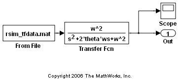
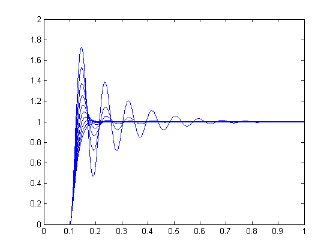
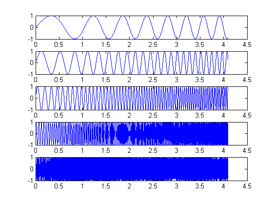
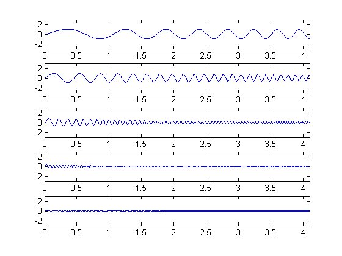

Using RSim Target for Batch Simulations
In this demo we illustrate how the RSim target can be used in applications that require running multiple batch simulations without recompiling the generated code. The demo modifies input signal data and model parameters by reading data from a MAT-file. In the first part (steps 1-5), ten parameter sets are created from the Simulink® model by changing the transfer function damping factor. The ten parameter sets are saved to a MAT-file, and the RSim executable reads the specified parameter set from the file. In the second part (step 6-7) of this demo, five sets of signal data chirps are created with increasingly high frequencies. In both parts, the RSim executable runs the set of simulations and creates output MAT-files containing the specific simulation result. Finally, a composite of all runs appears in a MATLAB® figure.
Contents
- Step 1. Preparation
- Step 2. Build the Model
- Step 3. Get the Default Parameter Set and Create 10 Parameters Sets
- Step 4. Run 10 RSim Simulations Using New Parameter Sets and Plot the Results
- Step 5. Set Up a Time Vector and an Initial Frequency Vector
- Step 6. Create 5 Sets of Signal Data in MAT Files
- Step 7. Run the RSim Compiled Simulation Using New Signal Data
Step 1. Preparation
Make sure the current directory is writable because this demo will be creating files.
[stat, fa] = fileattrib(pwd); if ~fa.UserWrite disp('This script must be run in a writable directory'); return; end
Open the model and configure it to use the RSim target. For more information on doing this graphically and setting up other RSim target related options, look here.
mdlName = 'rtwdemo_rsimtf'; open_system(mdlName); cs = getActiveConfigSet(mdlName); cs.switchTarget('rsim.tlc',[]);
The MAT-file rsim_tfdata.mat is required in the local directory.
if ~isempty(dir('rsim_tfdata.mat')), delete('rsim_tfdata.mat'); end str1 = fullfile(matlabroot,'toolbox','rtw','rtwdemos','rsimdemos','rsim_tfdata.mat'); str2 = ['copyfile(''', str1, ''',''rsim_tfdata.mat'',''writable'')']; eval(str2);
Step 2. Build the Model
Build the RSim executable for the model. During the build process, a structural checksum is calculated for the model and embedded into the generated executable. This checksum is used to check that any parameter set passed to the executable is compatible with it.
evalin('base','w = 70;') evalin('base','theta = 1.0;') disp('Building compiled RSim simulation.') rtwbuild(mdlName);
Building compiled RSim simulation. ### Starting Real-Time Workshop build procedure for model: rtwdemo_rsimtf ### Successful completion of Real-Time Workshop build procedure for model: rtwdemo_rsimtf
Step 3. Get the Default Parameter Set and Create 10 Parameters Sets
disp('Creating rtP data files') for i=1:10 % Extract current rtP structure using new damping factor. [rtpstruct]=evalin('base','rsimgetrtp(''rtwdemo_rsimtf'');'); savestr = strcat('save params',num2str(i),'.mat rtpstruct'); eval(savestr); evalin('base','theta = theta - .1;'); end disp('Finished creating parameter data files.')
Creating rtP data files Finished creating parameter data files.
Step 4. Run 10 RSim Simulations Using New Parameter Sets and Plot the Results
figure for i=1:10 % Bang out and run a simulation using new parameter data runstr = ['.', filesep, 'rtwdemo_rsimtf -p params',num2str(i),'.mat', ' -v']; [status, result] = system(runstr); if status ~= 0, error(result); end % Load simulation data into MATLAB for plotting. load rtwdemo_rsimtf.mat; axis([0 1 0 2]); plot(rt_tout, rt_yout) hold on end
The plot shows 10 simulations, each using a different damping factor.
Step 5. Set Up a Time Vector and an Initial Frequency Vector
The time vector has 4096 points in the event we want to do windowing and spectral analysis on simulation results.
dt = .001; nn = [0:1:4095]; t = dt*nn; [m,n] = size(t); wlo = 1; whi = 4; omega = [wlo:((whi-wlo)/n):whi - (whi-wlo)/n];
Step 6. Create 5 Sets of Signal Data in MAT Files
Creating .mat files with chirp data.
disp('This part of the demo illustrates a sequence of 5 plots. Each') disp('plot shows an input chirp signal of certain frequency range.') for i = 1:5 wlo = whi; whi = 3*whi; % keep increasing frequencies omega = [wlo:((whi-wlo)/n):whi - (whi-wlo)/n]; % In a real application we recommend shaping the chirp using % a windowing function (hamming or hanning window, etc.) % This example does not use a windowing function. u = sin(omega.*t); tudata = [t;u]; % At each pass, save one more set of tudata to the next % .mat file. savestr = strcat('save sweep',num2str(i),'.mat tudata'); eval(savestr); % Display each chirp. Note that this is only input data. % Simulations have not been run yet. plotstr = strcat('subplot(5,1,',num2str(i),');'); eval(plotstr); plot(t,u) pause(0.3) end
This part of the demo illustrates a sequence of 5 plots. Each plot shows an input chirp signal of certain frequency range.
Step 7. Run the RSim Compiled Simulation Using New Signal Data
Replace the original signal data (rsim_tfdata.mat) with the files sweep1.mat, sweep2.mat, and so on.
disp('Starting batch simulations.') for i = 1:5 % Bang out and run the next set of data with RSim runstr = ['.', filesep, 'rtwdemo_rsimtf -f rsim_tfdata.mat=sweep', ... num2str(i),'.mat -v -tf 4.096']; [status, result] = system(runstr); if status ~= 0, error(result); end % Load the data to MATLAB and plot the results. load rtwdemo_rsimtf.mat plotstr = strcat('subplot(5,1,',num2str(i),');'); eval(plotstr); plot(rt_tout, rt_yout); axis([0 4.1 -3 3]); end zoom on % cleanup evalin('base','clear w theta') disp('This part of the demo illustrates a sequence of 5 plots. Each plot') disp('shows the simulation results for the next frequency range. Using the') disp('mouse, zoom in on each signal to observe signal amplitudes.') close_system(mdlName, 0);
Starting batch simulations. This part of the demo illustrates a sequence of 5 plots. Each plot shows the simulation results for the next frequency range. Using the mouse, zoom in on each signal to observe signal amplitudes.